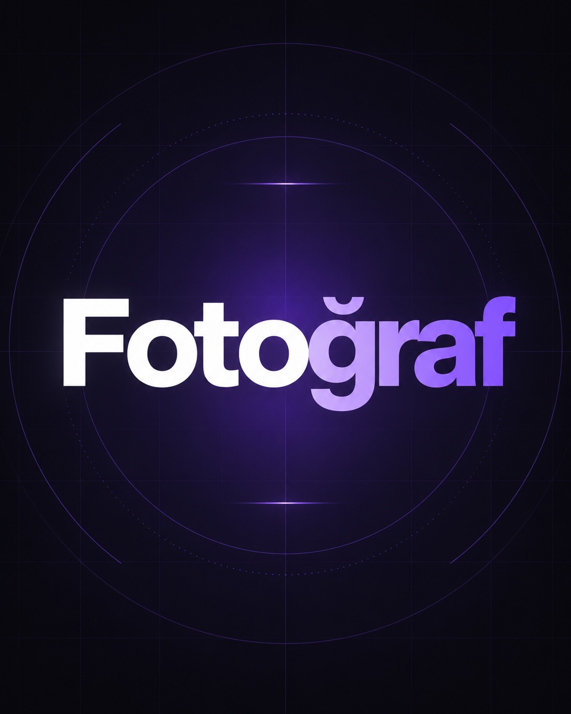
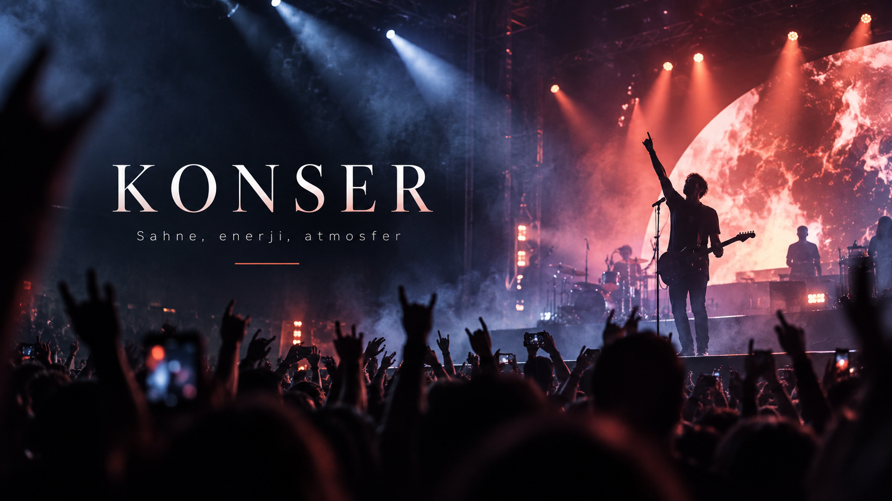
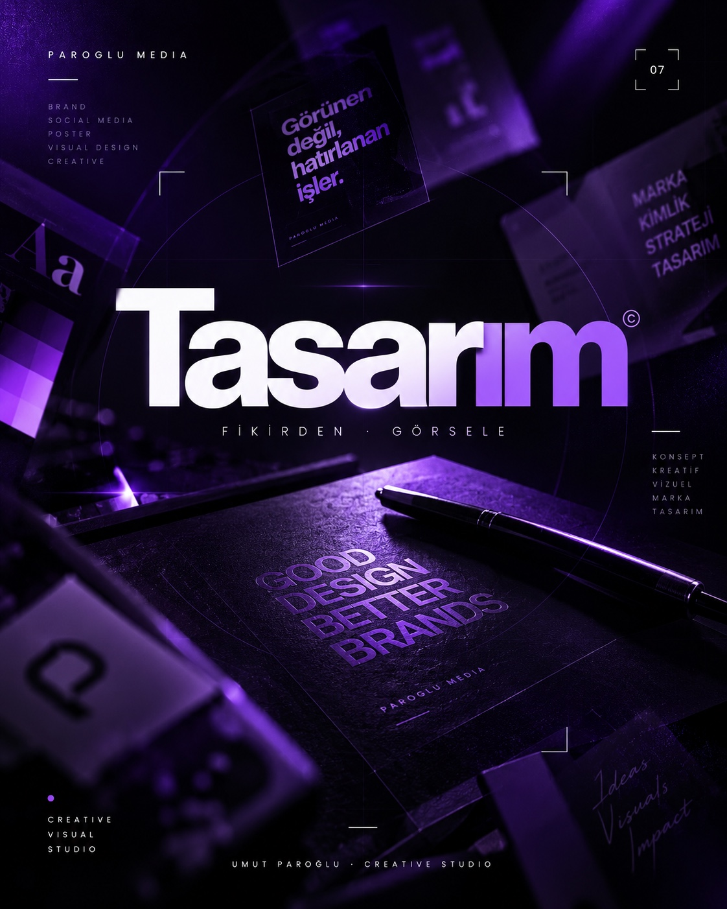
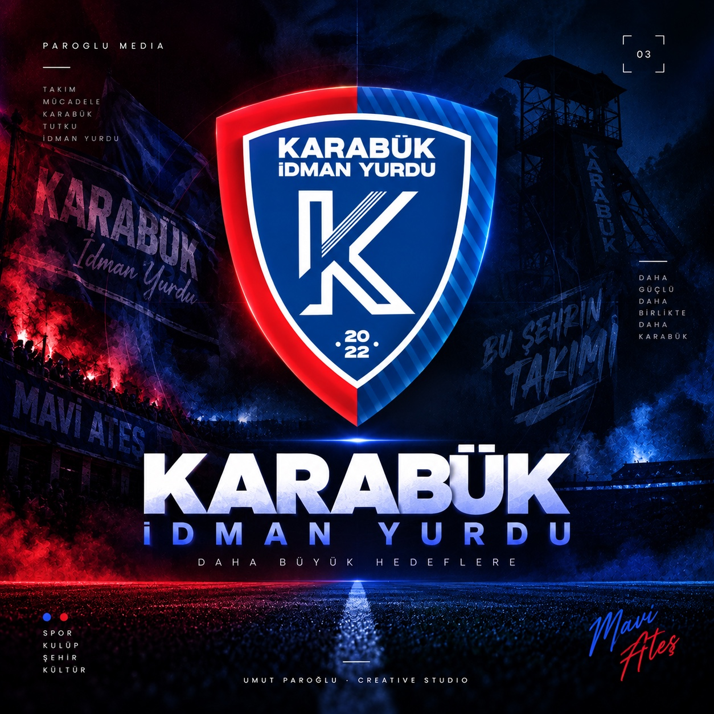
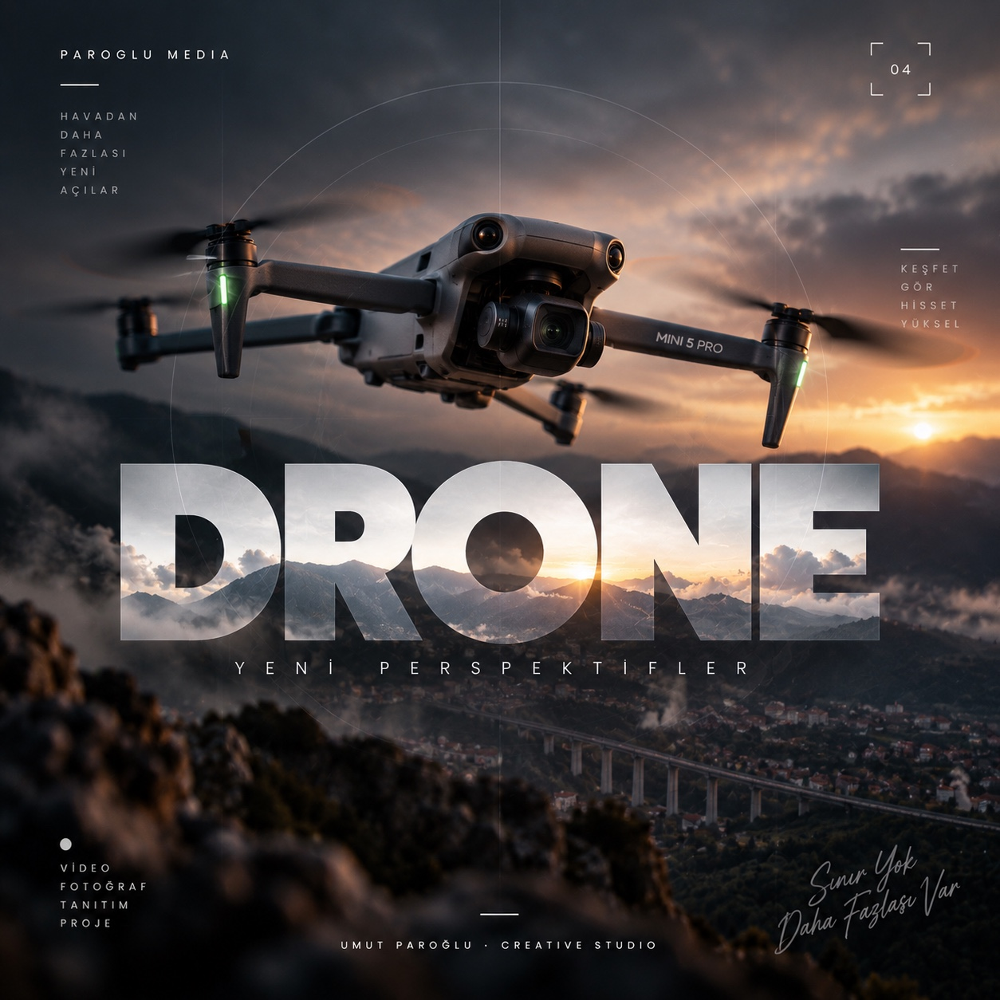

Tek üretim hattı
Çekim, kurgu ve tasarım birbirinden kopuk ilerlemez. Projenin görsel dili baştan sona aynı elde kalır.
Fotoğraf, video, tasarım, sosyal medya ve drone için yaratıcı üretim. Fikirden çekime, kurgudan yayına kadar aynı görsel dili koruyorum.
İşler kendi gerçek oranlarını koruyor. Fotoğraf, tasarım ve videolar tek bir akışta; her kart kendi içinde farklı karelere dönüşüyor.
Her disiplin kendi portfolyosuna açılıyor. Yeni işler geldikçe yemek, otomotiv, ürün gibi alt kategoriler aynı sistemin içine eklenebilir.





Karabük İdman Yurdu otobüsünde kulüp kimliğini büyük format bir yüzeye taşıdım. Tipografi, renk blokları, oyuncu görselleri ve araç panel yapısı tek bir bütün olarak kurgulandı.
Projeyi İncele ↗


Az ama gerçek. Birlikte üretim yaptığım markalar ve spor kulüpleri.
Çekim, kurgu ve tasarım birbirinden kopuk ilerlemez. Projenin görsel dili baştan sona aynı elde kalır.
İçerik sadece güzel görünmek için değil, kullanılacağı ekran, format ve izleme davranışı düşünülerek hazırlanır.
Konser, spor ve etkinlikte anı yakalamak; sonrasında o materyali doğru hikâyeye dönüştürmek aynı sürecin parçasıdır.
Markayı, hedefi, platformu ve ihtiyaçları netleştiriyoruz.
Konsept, çekim planı, görsel dil ve teslim formatı belirleniyor.
Çekim, tasarım ve kurgu tek bir yaratıcı çizgide ilerliyor.
Son kontrollerden sonra içerikler doğru formatlarda teslim ediliyor.
Reklam, konser, etkinlik ve sosyal medya için çekim + kurgu.
↗ 02Konser, portre, ürün, mekân ve etkinlik fotoğrafçılığı.
↗ 03Sosyal medya, kampanya, outdoor ve büyük format uygulamalar.
↗ 04İçerik planı, çekim, tasarım ve sayfa iletişimi.
↗ 05Mekânı ve ölçeği güçlü gösteren sinematik hava görüntüleri.
↗Tek bir çekim, bir kampanya ya da uzun soluklu içerik üretimi. Başlangıç noktası iyi bir brief.